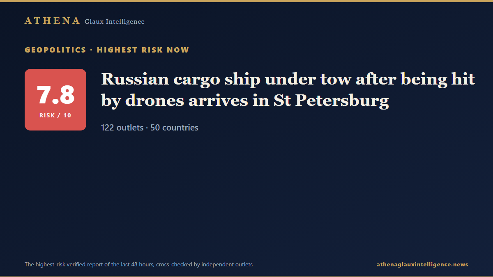
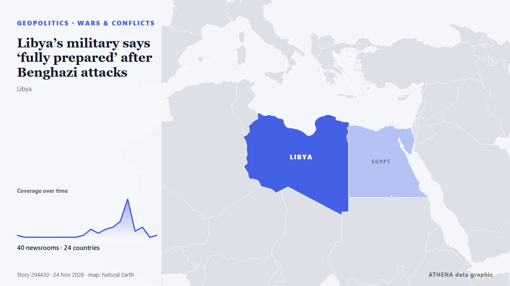

Risque 7.8Élevé
ATHENA Glaux Intelligence — Veille mondiale de l'information — chaque chiffre expliqué
Géopolitique
Toute la géopolitique >Risque le plus élevé maintenant

Risque en hausseHausse au cours des dernières 24 heures
- Qatar working to resume talks between US and IranRisque 0.0 → 3.3
- Moscow accuses Estonia of hostile actions on ‘verge of triggering open war’Risque 0.0 → 6.3
- Qatar needs US and Iran to resume talks to end war, PM saysRisque 1.7 → 6.2
Maritime et transport
Bureau maritime >Risque le plus élevé maintenant
Risque 7.6Élevé
Endurance athlete swims in Strait of Hormuz to highlight Iran war's impact on wildlife
Voir les preuves ›
Liste de surveillanceDétroits, ports et autres reportages maritimes
- Strait of HormuzPerturbéattack / strike · risk 7.6 · 22 newsrooms (72 h)
- Kerch Strait / Black SeaPerturbéattack / strike · risk 7.8 · 123 newsrooms (72 h)
- Danish Straits / BalticPerturbéattack / strike · risk 7.8 · 123 newsrooms (72 h)
Chaque titre, vérifié dans plusieurs pays.
ATHENA Glaux suit 632 médias dans le monde. Une information devient un événement vérifié seulement lorsque des médias indépendants la rapportent. Chaque événement indique qui l'a publiée en premier et un score de risque avec ses raisons.
1 327événements en 24 h
632médias suivis
36minutes entre deux mises à jour
Séisme ou inondation près de chez vous cette semaine ?
Saisissez votre ville et voyez les séismes, inondations, tempêtes et alertes officielles à proximité, avec une liste du kit d'urgence 72 heures. Gratuit, sans inscription, et votre lieu reste sur votre appareil.
Des articles arrivent de médias indépendants : quand deux se rejoignent sur la même histoire, un événement vérifié naît.
Comment ATHENA vérifie une information
- CollecterLes reportages arrivent de médias indépendants dans de nombreux pays.
- CroiserQuand deux médias se rejoignent sur la même information, elle devient un événement vérifié.
- ExpliquerChaque événement montre qui était le premier, jusqu'où il s'est propagé et pourquoi le risque est ce qu'il est.
Perspectives mondiales des risques
Bilans hebdomadaires et mensuels : les événements les plus à risque, les tendances par domaine et par région, et ce qu'il faut surveiller.
Lire les perspectives ›Briefing quotidien
Les dix événements mondiaux les plus importants du jour, les risques en hausse et les nouveaux événements, chaque chiffre expliqué.
Ouvrir le briefing du jour ›
GéopolitiqueLibya’s military says ‘fully prepared’ after Benghazi attacks
Libyan military says Benghazi port is ‘under control’ and it is ‘fully prepared’ to respond to threats. de Al Jazeera English
6.3Importance
6.5Risque · élevé
89%Confiance
Les titres sont affichés en anglais, tels que publiés.
Technologie et cyber
US blacklists S’pore-based chip firm Megaspeed linked to Nvidia scandal
US companies cannot ship goods, software and technology to companies on the entity list without a licence. de The Straits Times
Énergie et environnement
‘Worst COP ever’: Climate talks collapse after draft deal fails to include fossil fuels
Governments and campaigners rejected the "cover decision" drafted at the U.N.'s climate summit, COP31, on Sunday. de CNBC World
Sponsorisé
Cybernetics and Artificial Intelligence Lab Welcome to the Cybernetics and Artificial Intelligence Laboratory, established at the Department of Business Administration of the National and Kapodistrian University of Athens. The lab is headed by Professor Dimitrios Thomakos. The lab aims to do research that can be published in top venues. Our research uses tools and methods of Artificial Intelligence, and lies in the following areas: - Forecasting - Decision making - Cyber security - Finance We are always looking forward to collaborating with exceptional students!
En savoir plus – Cybernetics and Artificial Intelligence LabNavires dans les détroits du monde en ce moment
Comptages AIS en direct. Touchez ou survolez une barre pour le détail.
Derniers reportages
Sheikh Hasina seeks to return to Bangladesh on December 16 on state carrier
Singapore raises 2026 growth forecast to ‘around 6%’; Q3 GDP revised up at 6.1%
Russian aircraft enter South Korea’s air defence zone
N. Korea threatens to close Swiss diplomatic office
Rep. Jimmy Gomez to resign after House ethics panel sexual misconduct report
US targets Iran’s shadow banking ‘lifeline’ with new sanctions
German defense chief warns of risk of Ukraine conflict spreading to Baltic Sea region
EU to ban Russian flags and teams at European sports events, in new sanctions round
Énergie et environnement
COP31 ends in failure as countries split over fossil fuels, climate finance
COP31 ended without a consensus deal for the first time since 2009. de Ars Technica
Géopolitique
'Jewish terrorism': Eisenkot condemns West Bank arson attacks
Israeli opposition leader Gadi Eisenkot has condemned Israeli settler attacks in the occupied West Bank as "Jewish terrorism". de The New Arab
Énergie et environnement
Climate deal collapses in chaotic end to COP31
The COP31 climate talks ended in failure Sunday as a contentious deal collapsed over fossil fuels and the summit stretched into record overtime in Turkey. de Al-Monitor
Géopolitique, politique et sécurité
Plus ›Défense et sécurité nationale
Russia could put nuclear weapon in orbit by end of 2026, German media report
Russia could launch a satellite carrying a nuclear weapon into orbit before the end of the year, according to a joint report by German broadcasters WDR and NDR and the newspaper Süddeutsche Zeitung… de Novaya Gazeta Europe (EN)
- Diplomatie et sommets
Zelensky urges four-way peace talks with Russia, Europe and US 'as soon as possible'
- Guerres et conflits
Saudi Arabia intercepts Houthi drone targeting Riyadh
- Guerres et conflits
Israel's bombardment has turned Gaza into 'toxic wasteland'
- Diplomatie et sommets
Fake Trump ribs Carney at press gallery dinner
Économie, finance et marchés
Plus ›Matières premières et tensions
Oil prices exceed $92 on global commodity markets
Retail fuel prices in Cambodia fell again yesterday following a decline in international oil markets, according to the Ministry of Commerce. de Khmer Times
- Actions, obligations et marchés
DR Congo reimposes cobalt export ban to shore up prices
- Crypto et actifs numériques
US seeks to recover more than €900bn from Binance hack
- Logement et immobilier
Illegal property purchases down after Aykut conviction, president says
- Inflation et taux d'intérêt
5 Energy Stocks That Can Shrug Off a December Fed Rate Hike
Commerce, industrie et infrastructures
Plus ›Aérien, rail et route
PM Modi Announces Rs 15,000-Crore Development Package For Nepal
The two leaders virtually laid the foundation of several India-assisted projects in Nepal and flagged off a cross-border passenger rail link between Ayodhya in Uttar Pradesh and Janakpur Dham in… de NDTV World
- Transport maritime et ports
Three tankers explode in Strait of Hormuz
- Construction et infrastructures
[UPDATED] Anwar: Turkiye not ready to accept 10,000 Rohingya refugees from Malaysia [WATCH]
- Transport maritime et ports
Bahrain accuses Iran of striking industrial site as tankers hit in Hormuz
- Transport maritime et ports
Cool Carriers Welcomes Snow Land, First Reefer with Gate Rudder
Énergie, ressources et environnement
Plus ›Pollution et biodiversité
Turkish authorities search for lioness spotted on outskirts of Istanbul
A resident spotted the animal in the evening on Nov 22. de The Straits Times
- Sécurité énergétique
China, US and Russia leaders pledge to boost refined fuel output
- Pétrole et gaz
Samsung and DNV team up on nuclear-powered LNG carrier
- Climat et politique climatique
Key outcomes agreed at the UN climate talks in Antalya
- Climat et politique climatique
Guterres demands ‘dates and dollars’ for climate adaptation as COP31 ends without consensus
Technologie, IA et cybersécurité
Plus ›Puces et calcul
US blacklists 3 Malaysian firms over AI chip concerns
Commerce department restricts Speedmatrix, MSFusion and PT Megaspeed, among seven other companies, from gaining access to American goods and technology. de Free Malaysia Today
- Cybersécurité
GTA VI hacker released despite being sentenced to 7 years in UK prison
- Intelligence artificielle
Virginia, Oregon sue Musk's SpaceX over Grok AI's creation of child sexual abuse images and videos
- Médias et désinformation
Lough Neagh book reveals warnings of wastewater treatment ‘disaster‘ due to NI Water funding cut
- Intelligence artificielle
Amazon Acquires Tech and Staff From AI Startup Decart
Entreprises et investissement
Plus ›Gouvernance et dirigeants
Muhammad Zeeshan Ali to board China's space station as first foreign astronaut
This latest astronaut mission comes more than three years after entrepreneur and adventurer Namira Salim became the first Pakistani to travel to space aboard a Virgin Galactic suborbital space… de NDTV
- Stratégie d'entreprise
Google to shut down Nest app, Google Assistant on smart home devices in 2027
- Secteurs et risques
18,135 Hotels Join European Lawsuit Against Booking.com
- Secteurs et risques
De Lima seeks state of calamity declaration over El Niño
- Start-up et innovation
Greek Innovation Takes Centre Stage at Helsinki
Accidents et urgences
Plus ›Accidents et urgences
Bus and truck collision kills 11 in UAE’s Ras Al Khaimah
Eleven people were killed when a passenger bus and a truck collided in Ras Al Khaimah, one of the seven emirates that make up the United Arab Emirates, the country’s interior ministry said on Tuesday. de Cyprus Mail
- Accidents et urgences
Zanzibar Fire Damages Hotels and Shops
- Accidents et urgences
Local people say they warned about illegal scramblers before hit-and-run death of John Queenan (62) in Ballina
- Accidents et urgences
Three pedestrians killed on Irish roads since Friday as man (40s) dies after being struck by car in Donegal
- Accidents et urgences
The 1976 Plane Crash in Greece That Killed All 50 On Board
Trois façons de lire aujourd'hui
Commencez par celle qui convient à votre tempsÉvénements vérifiés
Classés selon l'ampleur de la couverture
- Nvidia reinstates Jensen Huang as CEO165 médias · 54 paysRisque 4.8
- Zelenskyy hails Ukraine's attack on a Russian warship docked at naval base in Libya116 médias · 45 paysRisque 6.6
- Indonesia probes factory fire that left 34 people missing54 médias · 31 paysRisque 6.6
- Asian markets surge on Nvidia rehiring Jensen Huang69 médias · 30 paysRisque 3.5
- US blacklists Singapore chip firm linked to Nvidia scandal54 médias · 26 paysRisque 3.6
Bureau d'évaluation
Posez une question et lisez une évaluation argumentée d'un sujet majeur, avec ce qui la démentirait.
Ouvrir le Bureau d'évaluation ›Aujourd'hui en chiffres
| 08:00 | 672 |
|---|---|
| 09:00 | 696 |
| 10:00 | 708 |
| 11:00 | 126 |
| 12:00 | 295 |
| 13:00 | 512 |
| 14:00 | 496 |
| 15:00 | 553 |
| 16:00 | 486 |
| 17:00 | 378 |
| 18:00 | 354 |
| 19:00 | 470 |
| 20:00 | 301 |
| 21:00 | 413 |
| 22:00 | 335 |
| 23:00 | 379 |
| 00:00 | 225 |
| 01:00 | 397 |
| 02:00 | 391 |
| 03:00 | 272 |
| 04:00 | 266 |
| 05:00 | 438 |
| 06:00 | 323 |
| 07:00 | 474 |
Risque des événements du jour
Géopolitique104Économie et marchés38Commerce et industrie38Technologie et cyber34Entreprises33Énergie et environnement30Maritime11
Signaux émergents
- Hausse soudaine · ActifDevelopment
- Hausse soudaine · ActifMerkury
- Hausse soudaine · ActifEsmaeil Baghaei
- Hausse soudaine · ActifUkrainian-made
- Hausse soudaine · ActifIran-related
Alertes officielles
- M 6.5 - Vanuatu regionM6.5 · USGS ·
- M 5.9 - 238 km SW of Yanglong, ChinaM5.9 · PAGER yellow · USGS ·
Restez informé
ATHENA Weekly Risk Picture
Les plus grands risques géopolitiques, économiques et maritimes de la semaine, recoupés et notés.
Chaque vendredi à 8 h (heure d'Athènes) · gratuit · en anglais
S'abonner gratuitementATHENA sur Telegram
Les nouvelles dès leur publication : les événements urgents de risque 6 ou plus, un récapitulatif horaire, les mises à jour des suivis de risque et le briefing quotidien à 10 h.
Gratuit · publications en anglais · désinscription à tout moment
Rejoindre le canalL'inscription est gérée par beehiiv avec double confirmation : rien de ce que vous saisissez n'est envoyé à ATHENA, et chaque numéro contient un lien de désinscription.
Suivi des risques
Plus ›Détroit d'OrmuzRisque 7.610 nouveaux événements cette semaine · en baisse (38 la semaine précédente)Mer RougeRisque 6.027 nouveaux événements cette semaine · en baisse (45 la semaine précédente)Grèce et TurquieRisque 3.56 nouveaux événements cette semaine · stable par rapport à la semaine précédenteChypreRisque 5.014 nouveaux événements cette semaine · stable par rapport à la semaine précédenteSanctions contre la RussieRisque 6.614 nouveaux événements cette semaine · stable par rapport à la semaine précédenteGuerre en UkraineRisque 7.1226 nouveaux événements cette semaine · en baisse (277 la semaine précédente)Proche-Orient : Israël et GazaRisque 6.667 nouveaux événements cette semaine · en baisse (86 la semaine précédente)TaïwanRisque 1.57 nouveaux événements cette semaine · en baisse (20 la semaine précédente)Pétrole et gazRisque 2.926 nouveaux événements cette semaine · en baisse (49 la semaine précédente)Canal de SuezRisque 0.00 nouvel événement cette semaine · en baisse (3 la semaine précédente)Détroits turcsRisque 0.00 nouvel événement cette semaineCanal de PanamaRisque 0.00 nouvel événement cette semaineFlotte fantômeRisque 0.01 nouvel événement cette semaine · en baisse (4 la semaine précédente)Navigation en mer NoireRisque 0.02 nouveaux événements cette semaine · en baisse (5 la semaine précédente)Banques centrales et tauxRisque 4.239 nouveaux événements cette semaine · en baisse (47 la semaine précédente)Économie grecqueRisque 2.89 nouveaux événements cette semaine · stable par rapport à la semaine précédenteÉnergie en Méditerranée orientaleRisque 0.00 nouvel événement cette semaine · en baisse (4 la semaine précédente)BalkansRisque 3.014 nouveaux événements cette semaine · en baisse (24 la semaine précédente)Migration en MéditerranéeRisque 0.00 nouvel événement cette semaine · en baisse (4 la semaine précédente)
Risques mondiaux — semaine 48, 2026 (23–29 nov.) ›
Dans le monde
Moyen-Orient et Afrique du NordBahrain says Iranian attack hits industrial facility, causes fire
57 événements
Asie du Sud-EstVietnam Embassy celebrates Vietnamese Culture Day in Phnom Penh
56 événements
EuropeIreland hit with more bomb threats as security preparations ramp up for EU summit
55 événements
Amérique du NordNvidia reinstates Jensen Huang as CEO
54 événements
Asie du SudIndonesia probes factory fire that left 34 people missing
52 événements
Asie de l'EstLee names new FM, 3 other ministers, spy chief
44 événements
Afrique subsaharienneCOP31 ends in failure as countries split over fossil fuels, climate finance
44 événements
Russie et EurasieEstonia to close border with Russia for at least six months
43 événements
OcéaniePM Wong to visit Australia from Nov. 23-25, meet Australian PM Albanese
36 événements
Amérique latine et CaraïbesUS blacklists Singapore chip firm linked to Nvidia scandal
25 événements